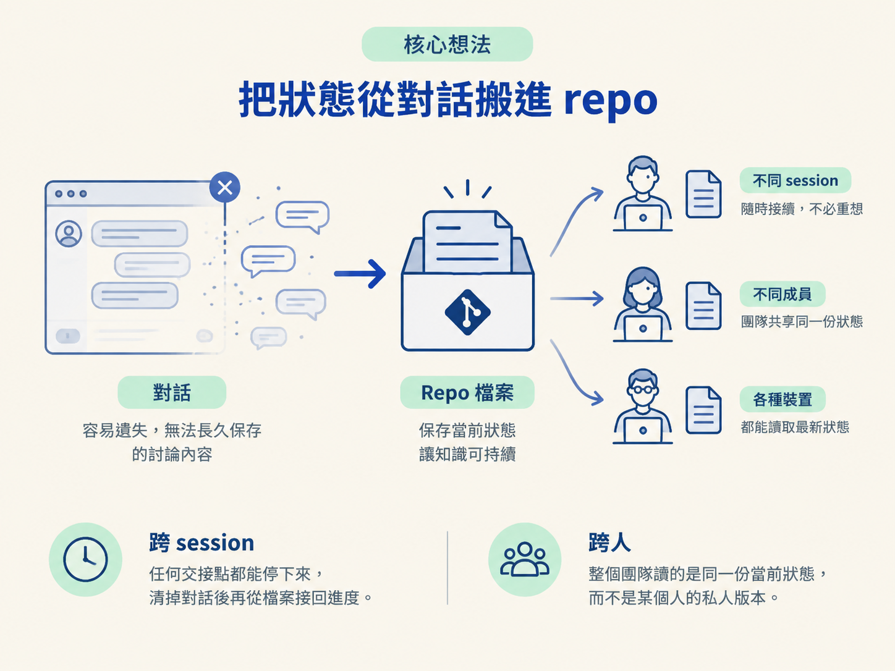
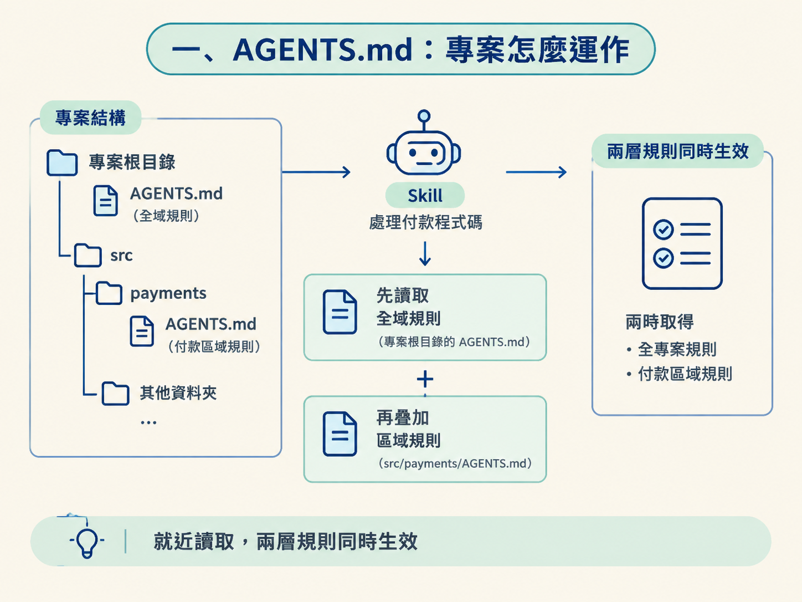
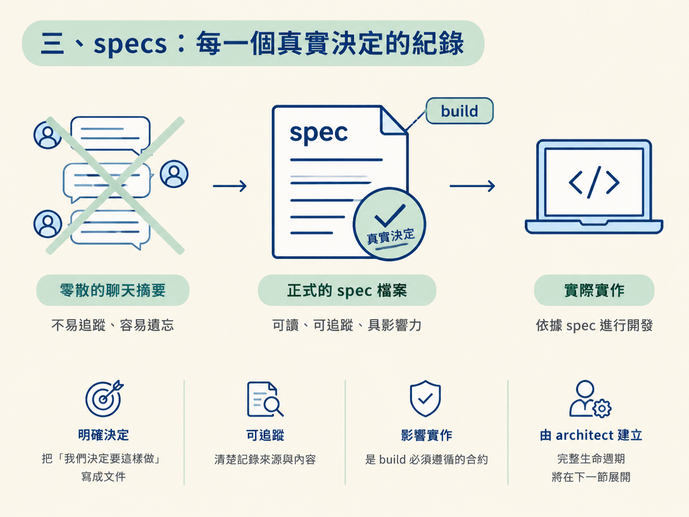

看完這一節，你應該能說明：為什麼這套流程把工作狀態放進檔案，而不是留在聊天裡；也能分辨 AGENTS.md、scope、specs 與 design.md 各自負責什麼、應該放在哪裡。
想像一下：昨天下午，你花了四十分鐘和 AI 討論資料庫、API 形狀，以及錯誤處理要回傳哪些欄位。最後好不容易做出決定。今天早上你開了一個新對話，AI 卻問你：「這個專案要用什麼資料庫？」
如果隊友這時候 pull 了你的 branch，他看得到程式碼，卻看不到那四十分鐘裡做過的判斷。那些知識沒有真正被存下來，只是暫時住在某個聊天視窗裡。對話結束、session 清掉，或換一個人接手，決定就像寫在沙灘上的字一樣消失。
這套工作流的第一個設計決定，就是把工作狀態搬進 repo 裡的檔案。本節會拆解四種檔案，說清楚每一種承載什麼知識，以及它由誰負責建立。
這套流程建立在一個前提上：工作流知道的每件事，都應該寫在專案檔案裡。對話可以結束，session 可以清掉，隊友可以 pull 分支，但知識仍然存在，因為它從頭到尾就沒有被鎖在某個聊天視窗裡。
這會帶來兩個直接好處。
第一是跨 session。你可以在任何交接點停下來，清掉對話，之後再從檔案撿回進度，不必重新回想整段討論。第二是跨人。整個團隊讀的是同一份當前狀態，而不是某個人腦中，或某個聊天視窗裡的私人版本。

這套流程用四種檔案承載知識。它們各自負責不同問題，並不是同一種東西換了四個名字。
第一種是情境檔（context files），檔名固定為 AGENTS.md。它描述專案實際上怎麼運作，例如使用什麼技術棧、有哪些指令，以及團隊遵守哪些慣例。內容使用任何 coding agent 都能讀懂的純文字。
它有兩個重要設計。第一個是可以巢狀：專案根目錄可以放一份管理全域規則的檔案，特定資料夾裡則能再放一份只管理該區域的規則。
例如，專案可以同時有根目錄的 AGENTS.md，以及 src/payments/AGENTS.md。後者只記錄付款程式碼需要遵守的規則。當某個 skill 處理付款程式碼時，就會讀取離它最近的那一份，因此同時取得全專案規則與付款區域規則。

第二個設計是單一真實來源。如果你使用 Claude Code，專案裡還可以有一個很小的 CLAUDE.md，但它不重複記內容，只負責指向 AGENTS.md。這樣規則只有一份，不會出現兩份內容逐漸漂移的副本。
AGENTS.md 由 audit 建立，其他 skill 都讀取它；sync 則負責讓它跟上程式碼的變化。當慣例已經寫在檔案裡，skill 就不必再自行猜測，避免同一個專案裡出現多套互相矛盾的做法。
第二種是範疇（scope），放在 docs/scope/。它是一份粗粒度計畫，回答兩個問題：「要做什麼？」以及「應該按照什麼順序做？」scope 由 scope 建立。
它的生命週期也有一條重要界線：develop 在功能建置過程中推進 scope，例如把功能標成進行中、勾掉已完成的里程碑；但它不會自己把功能標成全部完成。
原因很簡單：功能「建好了」不等於「驗證過了」。一個不帶參數的 scope，以及合併前執行的 sync，會把 scope 重新對回程式碼目前的實際狀態。
第三種是規格（specs），放在 docs/specs/。一份 spec 記錄一個真實決定，同時也是 build 必須遵循的合約。
它最重要的作用，是把「我們決定要這樣做」變成一份可讀、可追蹤的檔案，而不是留在某個人的記憶裡。spec 由 architect 建立；它的完整生命週期會在下一節展開。這裡先記住它的定位：spec 不是聊天摘要，而是會影響實作的正式決定。

第四種是設計系統（design system），主要由一份 design.md 承載。它描述使用者介面的美術方向，包括整體性格，以及頁面應該如何組裝的規則。
這裡有一個刻意的分工：確切的顏色、尺寸等數值，實際存在專案自己的 CSS 裡；design.md 只負責指向這些值。任何數值都不會同時寫在兩個地方，因此可以避免「文件說一套、程式跑另一套」。
這份檔案由 develop 建立：第一次製作介面時建立，或從既有畫面萃取出來。
| 載體 | 放在哪 | 裝什麼 | 誰建立 |
|---|---|---|---|
| AGENTS.md（＋CLAUDE.md 指標） | 專案根目錄與各區域 | 專案怎麼運作：stack、指令、慣例 | audit |
| scope | docs/scope/ | 做什麼、什麼順序 | scope |
| specs | docs/specs/ | 每一個真實決定的書面紀錄 | architect |
| design.md | 專案裡（值在 CSS） | 介面的美術方向與組裝規則 | develop |
這套工作流把狀態放在檔案裡，而不是對話裡，因此工作可以跨 session、跨人延續。四種載體各管一件事：AGENTS.md管專案怎麼運作，支援巢狀規則並維持單一真實來源；scope 管要做什麼與執行順序；specs 管每一個真實決定；design.md管介面方向，並只指向 CSS 裡的數值。檔案要長期可信，就必須有規則管理「誰能改什麼」。
四種載體中，spec 最需要明確規則，因為它牽涉到「決定」本身：同一份文件究竟代表已決定但尚未實作、正在實作，還是已經完成？下一節會帶你走過一份 spec 從出生、變更，到被取代的完整生命週期。